Kangaroo: Caching Billions of Tiny Objects on Flash
This page was written by an AI model to give a high-level overview of the paper. Please check the paper for detail: ACM Digital Library.
Many large web services need to cache billions of objects that each average only a few hundred bytes: Facebook's social-graph edges average under 100 B, tweets average about 33 characters, and Azure's IoT metadata averages 300 B. These working sets are far too large and too numerous for DRAM, which costs an order of magnitude more per bit than flash, but flash has its own sharp limits: it can only be read or written in multi-kilobyte pages, far larger than one tiny object, and each flash cell survives only a limited number of writes before it wears out. Writing a 100 B object into a 4 KB flash page amplifies bytes written by 40x, rapidly burning through the device's write budget.
Prior flash-cache designs each solve only half of this problem. Log-structured caches append objects to flash sequentially and batch many insertions into each write, which keeps write amplification low, but tracking billions of tiny objects individually requires a DRAM index with roughly one entry per object; even a heavily optimized design like Flashield needs about 75 GB of DRAM to index 2 TB of 100 B objects. Set-associative caches hash each key to one fixed flash location ("set") and need no DRAM index at all, but admitting a single object forces rewriting that object's entire 4 KB set, which is the worst case for both application-level and device-level write amplification, and in production these caches must be run with over half the flash device left empty just to survive.
Kangaroo's key insight is that these two designs are complementary rather than competing: a tiny log-structured cache can absorb the write-amplification problem while needing only a small DRAM index, and a large set-associative cache can hold almost all the data while needing almost no DRAM. Objects are only moved into the set-associative layer once enough of them collide on the same destination, so each expensive page write is amortized across many objects at once.
Concretely, Kangaroo stacks a tiny DRAM cache, then KLog (a small, roughly 5%-of-flash log-structured cache with an in-DRAM hash-table index), then KSet (a large, roughly 95%-of-flash set-associative cache with only a per-set Bloom filter in DRAM). KLog's index is partitioned so that all objects destined for the same KSet location land in the same index bucket, letting Kangaroo cheaply enumerate every such object (Enumerate-Set) when it is time to write that set. A threshold admission policy only writes a KSet location once at least n colliding objects have accumulated, and a lightweight approximation of the RRIP eviction policy, called RRIParoo, improves KSet's hit ratio using about one bit of DRAM per object and no extra flash writes.
On a 7-day Facebook production trace with 16 GB DRAM, a 1.9 TB flash drive, and a budget of three device-writes per day, Kangaroo lowers the miss ratio from 0.29 (a set-associative baseline) to 0.20, a 29% reduction, and 56% lower than an optimistic log-structured design. Across simulated sweeps of DRAM budget, write-rate budget, flash capacity, and object size, Kangaroo is Pareto-optimal over nearly the entire range tested on both Facebook and Twitter traces, and in a production test deployment at Facebook it cuts flash misses by 18% at an equal write rate, or cuts write rate by 38% at an equal miss ratio.
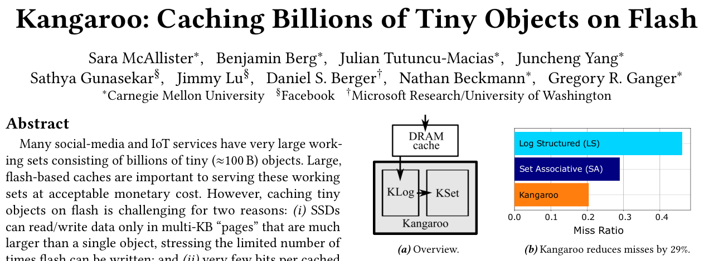
Key takeaways
- Tiny objects (about 100 to 700 B) are an adversarial workload for flash caches: a log index's DRAM cost and a set-associative cache's write amplification both worsen as objects shrink.
- Log-structured caches minimize flash writes but need a DRAM index sized to the object count; set-associative caches need no index but rewrite a full flash page per admitted object.
- Kangaroo puts a tiny log-structured cache (KLog, about 5% of flash) in front of a large set-associative cache (KSet, about 95% of flash); KLog's partitioned index cheaply finds which buffered objects collide on the same KSet location.
- Threshold admission writes a KSet location only once enough colliding objects justify the write; RRIParoo gets near state-of-the-art eviction behavior in KSet with about 1 bit of DRAM per object and no added flash writes.
- Result: about 7 bits of DRAM per object, 29% fewer misses than a set-associative baseline under realistic budgets, Pareto-optimal behavior as constraints vary, and gains confirmed in a Facebook production deployment.
From two half-solutions to one hierarchical flash cache
Why tiny objects break prior flash-cache designs, how KLog and KSet complement each other, and the three techniques that make the combination work.
1 · Why tiny objects are hard to cache on flash
Flash drives expose a block-storage interface: hosts read and write logical blocks (commonly 4 KB), but the device can only erase much larger "erase blocks" (e.g., 256 MB). Most writes therefore trigger two kinds of amplification. Device-level write amplification (dlwa) occurs inside the drive when its flash translation layer must copy live pages elsewhere before erasing a block; it worsens as more of the raw capacity is used and as writes get smaller and more random. Application-level write amplification (alwa) occurs when the cache itself must rewrite more than the new data, for example reading, modifying, and rewriting an entire 4 KB logical block to install a 100 B object (40x alwa). The two multiply together, and both get worse as objects shrink, because more small objects must share each page and each erase block.
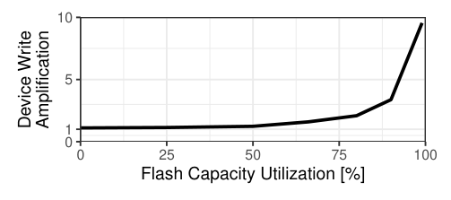
A common fix for dlwa is over-provisioning: exposing only a fraction of raw flash capacity so cleaning finds fewer live pages per erase block. Measured on a 1.9 TB drive with random 4 KB writes, dlwa rises from about 1x at 50% utilization to about 10x at 100% utilization, which is why over-provisioned designs sacrifice usable cache capacity to protect the device.
2 · Why prior designs fall short
Key-value stores (e.g., SILT, RocksDB) are a poor fit for caching because they assume deletes are rare, while a cache deletes constantly as it evicts. Immutable layers used by designs like SILT turn evictions into "holes" that are only reclaimed at the next compaction, forcing either frequent, expensive compactions or large capacity losses (Netflix had to over-provision RocksDB-as-cache by 67% for this reason).
Of the remaining designs, log-structured caches keep writes efficient but need a DRAM index entry per object; even after heavy optimization (20 bits for indexing plus about 10 bits for Bloom filters in Flashield), indexing 2 TB of 100 B objects needs about 75 GB of DRAM, and the DRAM-cache component these designs also rely on grows further with flash capacity. Set-associative caches (e.g., CacheLib's small-object cache, which serves Facebook's production social graph) need no DRAM index because a key's possible location is implied by hashing it to a "set," but admitting one object rewrites the whole set, incurring up to 40x alwa for a 100 B object in a 4 KB set, on top of dlwa from small, random writes.
3 · Kangaroo's hierarchical design
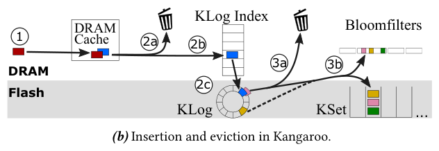
- Lookup. A request first checks a tiny DRAM cache (under 1% of capacity).
- KLog. On a DRAM miss, Kangaroo checks KLog (about 5% of capacity) via its in-DRAM index.
- KSet. On a KLog miss, Kangaroo hashes the key to find its KSet set, checks a small per-set Bloom filter, and if present reads that set's flash page(s) to scan for the key.
- Insertion. New objects enter the DRAM cache; eviction from DRAM either drops the object (pre-flash admission) or appends it to KLog's flash log (after buffering in DRAM to batch writes).
- Promotion to KSet. Eviction from KLog either drops the object (threshold admission, below) or moves it, along with every other KLog object that maps to the same KSet set, in one amortized flash write.
4 · KLog: a write-efficient staging area
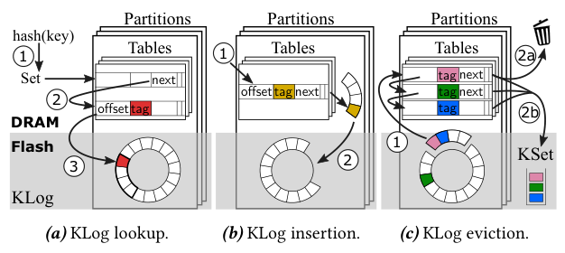
KLog writes objects to a circular flash log in large batches and tracks them with a DRAM hash-table index using separate chaining; each entry holds a flash offset, a tag (partial key hash), a next-pointer, eviction metadata, and a valid bit. Looking up a key hashes it to its KSet set, which determines the KLog bucket to scan; inserting a key creates an index entry and appends the object to an in-DRAM segment buffer that is flushed to flash once full. Because the bucket is chosen by the object's eventual KSet set, Enumerate-Set, finding every KLog object bound for a given KSet set, is just iterating one bucket.
KLog reduces per-object DRAM by splitting its log into 64 partitions (shrinking the offset field) and splitting its index into 220 tables (letting all keys in one table share a smaller tag while keeping the same false-positive rate), with next-pointers replaced by small offsets into a table's own memory. Table 1 compares the result to a naive log-structured design.
| Component | Naive log-only | Naive Kangaroo | Kangaroo |
|---|---|---|---|
| KLog index (offset / tag / next-pointer / eviction / valid) | 29+29+64+67+1 = 190 b | 25+29+64+58+1 = 177 b | 19+9+16+3+1 = 48 b |
| KSet (Bloom filter / eviction) | – | 3+5 = 8 b | 3+1 = 4 b |
| Index buckets | ≈3.1 b | ≈3.1 b | ≈0.8 b |
| Log, set contributions (weighted) | 100% = 181 b | 5% = 8.9 b, 95% = 7.6 b | 5% = 2.4 b, 95% = 3.8 b |
| Total per object | 193.1 b | 19.6 b | 7.0 b |
KLog's own index is slightly larger per-object than the state of the art (48 b vs. 30 b in Flashield), but since it tracks only the roughly 5% of objects resident in KLog at a time, and KSet needs almost no index, the combined overhead is 7.0 bits per object overall, about 4.3x less than Flashield.
5 · KLog to KSet: amortizing writes with threshold admission
A background thread flushes KLog's circular log one segment at a time (keeping utilization high, empirically 80 to 95%, and giving each object roughly twice as long to find a colliding partner before being flushed). For each flushed object, Kangaroo calls Enumerate-Set to find every other KLog object bound for the same KSet set and writes them all together in one page write. A threshold admission policy sets a minimum count n: if fewer than n objects map to a set when it is flushed, they are dropped (or, if they were hit while in KLog, re-admitted to the head of the log) rather than written.
The paper also derives a continuous-time Markov model (not peer-reviewed, Appendix A) of an object moving between out-of-cache, KLog, and KSet states under the independent reference model. It proves that adding KLog and threshold admission does not change the cache's miss ratio (so long as KLog is small relative to KSet), while reducing application-level write amplification to alwa = p(1 + w·FX(n) / (FX(1)·E[X|X≥n])), where p is the pre-flash admission probability, w is the set size, and X is the number of KLog objects mapping to one set. A representative 2 TB, 5%-KLog configuration gives Kangaroo an alwa of about 5.8x versus about 17.9x for a same-sized set-associative cache, roughly 3.1x lower.
6 · KSet: a minimal-DRAM set-associative cache
KSet splits the cache into fixed-size sets, by default 4 KB to match flash's read/write granularity, and maps each key to one set by hashing. No DRAM index is needed since the set is derivable from the key; a lookup simply reads the whole set off flash and scans it. To avoid unnecessary flash reads, KSet keeps a small per-set Bloom filter in DRAM (sized for about a 10% false-positive rate), rebuilt whenever the set is rewritten.
7 · RRIParoo: usage-based eviction without a DRAM index
Usage-based eviction (tracking which objects were recently used) substantially improves hit ratio over FIFO, but it normally requires per-object DRAM metadata updated on every access, which a bare set-associative design cannot afford. Kangaroo adapts RRIP, a multi-bit clock algorithm from processor caches: each object gets a small reuse prediction (3 bits in Kangaroo) from near (likely reused) to far (safe to evict); accessed objects are promoted to near, new objects are inserted at a middling long value, and when nothing is at far, every object's prediction is incremented until one reaches it.
- RRIParoo stores the full RRIP predictions on flash with the set, not in DRAM.
- It keeps only one DRAM bit per object, marking whether the object has been hit since the set was last rewritten.
- Because RRIP only needs to promote objects on a hit and increment predictions at eviction, promotions can be deferred: at the next rewrite of a set, any object with its hit bit set is promoted to near and its bit cleared, predictions are incremented until something reaches far, and the set is refilled from near to far, merging in any newly flushed KLog objects by their own (fully tracked, DRAM-indexed) RRIP state.
- This gives RRIP-level eviction quality in KSet for about 1 bit of DRAM per object and no additional flash writes beyond the write the set would have taken anyway.
8 · Implementation and defaults
Kangaroo is implemented as a C++ module inside CacheLib, Facebook's open-source caching engine, and was intended for open-sourcing with CacheLib. Table 2 lists its default parameters, used throughout the evaluation unless swept.
| Parameter | Default |
|---|---|
| Total cache capacity | 93% of flash |
| Log (KLog) size | 5% of flash |
| Admission probability, DRAM → KLog | 90% |
| Admission threshold, KLog → KSet | 2 |
| Set size | 4 KB |
How these choices translate into miss ratio, write rate, DRAM usage, and production results is covered in the Evaluation tab.
Evaluation
What the paper measures, its key figures in the paper's own order, and what each one shows.
The paper evaluates a real CacheLib implementation of Kangaroo on physical servers and SSDs, plus a trace-driven simulator (validated within 10% of measured results) used to sweep parameters beyond what physical hardware allows.
| Dimension | Setting |
|---|---|
| Platform | Two 16-core Intel Xeon E5-2698 servers (64 GB and 128 GB DRAM), Ubuntu 18.04 |
| Flash device | Western Digital SN840, 1.92 TB, rated 3 device-writes/day (62.5 MB/s sustained write budget) |
| Workloads | Sampled 7-day production traces from Facebook (avg. object 291 B) and Twitter (avg. object 271 B); Facebook trace run 3x concurrently for 100K req/s |
| Baselines | SA: CacheLib's production set-associative small-object cache. LS: an optimistic log-structured cache with a full DRAM index, capped at 16 GB index (30 b/object) plus an extra 16 GB DRAM cache |
| Metrics | Cache miss ratio; application- and device-level write rate/amplification; request throughput and tail latency |
Under realistic budgets, Kangaroo cuts misses by 29% over SA and 56% over LS
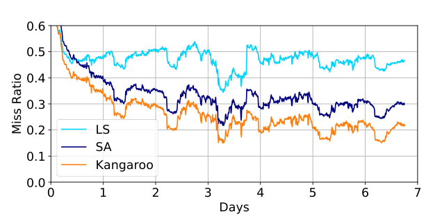
What it shows. Miss ratio over a 7-day Facebook trace (x-axis: days, y-axis: miss ratio) for SA, LS, and Kangaroo, all held to 16 GB DRAM, a 1.9 TB drive, and under 62.5 MB/s device writes. Kangaroo tracks the others during warm-up but settles lower: it uses 93% of flash capacity versus SA's 81% (over-provisioned to limit dlwa) and LS's 61% (capped by its DRAM index). Peak throughput without a backend is 158K gets/s for Kangaroo versus 168K (SA) and 172K (LS); p99 latency is 736 µs (Kangaroo), 699 µs (SA), and 229 µs (LS), all far below the 51 ms and 8 ms p99 SLAs reported for Facebook's and Twitter's production caches.
What to take from it. SA and LS are each held back by one constraint (flash writes for SA, DRAM reach for LS); Kangaroo's extra usable capacity, lower alwa than SA, and RRIParoo eviction combine to lower misses at the same budget. The modest latency and throughput gap versus the baselines does not matter in practice, since production tail latency is dominated by backend misses, not cache hits.
Kangaroo is Pareto-optimal across device write-rate budgets except at the very lowest rates
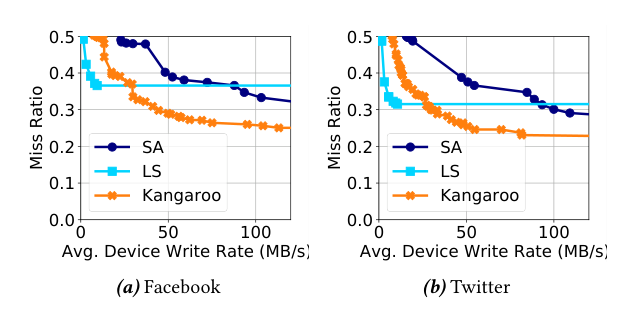
What it shows. Miss ratio versus average device-level write rate (x-axis, MB/s) for Facebook and Twitter traces, at 16 GB DRAM and 2 TB flash. At very low write budgets, LS has the lowest miss ratio. At the default 62.5 MB/s and above, Kangaroo is consistently lower than both SA (hurt by FIFO eviction and higher alwa) and LS (capped by DRAM once write budget exceeds about 15 MB/s on both traces).
What to take from it. Kangaroo is designed to balance dlwa against DRAM usage, not to minimize dlwa alone, so at extremely low write budgets its KSet write cost forces it to admit fewer objects than LS. The paper notes that un-evaluated Kangaroo configurations with a larger KLog share could close this specific gap.
DRAM barely matters to SA or Kangaroo but is decisive for LS
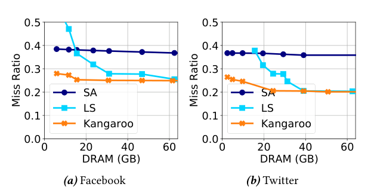
What it shows. Miss ratio versus DRAM capacity from 5 to 64 GB, with flash fixed at 2 TB and device write rate capped at 62.5 MB/s, for Facebook and Twitter. SA's miss ratio is nearly flat; Kangaroo's improves slightly as more DRAM lets KLog grow, but both remain mainly write-rate-constrained. LS's miss ratio depends strongly on DRAM, approaching but not reaching Kangaroo's at 64 GB DRAM on Facebook and 40 GB on Twitter.
What to take from it. Beyond the point where LS's miss ratio flattens, Kangaroo is itself capped by write rate (consistent with Result 2); this is also why larger flash devices need proportionally more DRAM to let LS compete, e.g. a 4 TB device needs about 60 GB DRAM to match what a 2 TB device achieves with 30 GB.
Kangaroo scales well to larger flash devices; LS does not
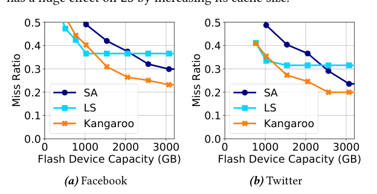
What it shows. Miss ratio versus flash device capacity, with DRAM capped at 16 GB and write rate capped at 3 device-writes/day, for Facebook and Twitter. Except at small device sizes (below about 1.2 TB on Facebook and 1 TB on Twitter, where SA and Kangaroo are increasingly write-rate-limited while LS is comparatively less DRAM-constrained), Kangaroo is Pareto-optimal across the range.
What to take from it. As flash capacity grows, LS quickly becomes DRAM-limited again, while Kangaroo and SA keep benefiting from the added write budget and capacity, with Kangaroo ahead of SA throughout due to lower alwa and RRIParoo.
Kangaroo degrades more gracefully than prior designs as objects shrink
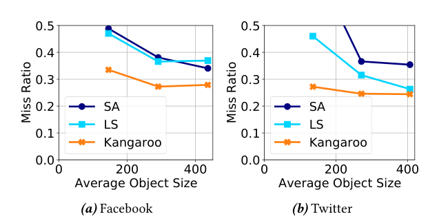
What it shows. Miss ratio versus average object size (objects scaled and clamped to [1 B, 2048 B]) with write rate fixed at 62.5 MB/s, 2 TB flash, 16 GB DRAM. SA's alwa grows inversely with object size because it always writes a fixed 4 KB page per admission; LS's effective cache size (in bytes) shrinks as objects shrink because its DRAM index tracks a roughly fixed object count. Both suffer sharply more misses as objects get smaller. Kangaroo is affected too, but less: going from 500 B to 50 B average size, Kangaroo's alwa grows about 4x versus SA's about 10x, and on the Twitter trace Kangaroo beats LS by 7.1% at 500 B and by 41% at 50 B average object size.
What to take from it. Kangaroo can also trade some DRAM for alwa by shrinking KLog without shrinking overall cache size, a lever SA and LS do not have, which helps it scale toward the tiny-object regime that motivates the paper.
Each of Kangaroo's techniques trades write rate for miss ratio differently
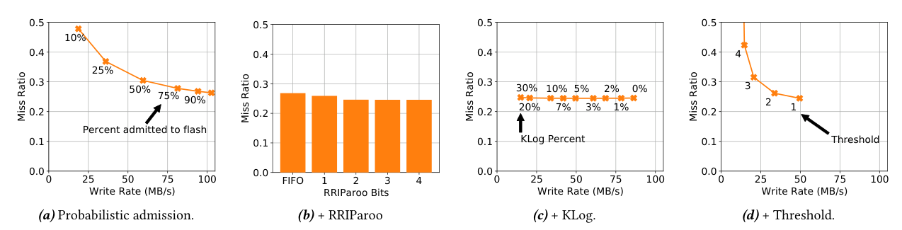
What it shows. Four sensitivity sweeps on the Facebook trace, building up from a plain FIFO set-associative cache. (a) Pre-flash admission probability 10 to 100%: write rate rises roughly linearly with admission, but miss-ratio gains shrink at high admission, motivating the 90% default. (b) RRIParoo with 1 to 4 bits versus FIFO: 1 bit cuts misses 3.4%, 3 bits cuts 8.4% (the chosen default, at the same DRAM cost as 1 bit under Kangaroo's bit-allocation scheme), and 4 bits is slightly worse. (c) KLog size from 0 to 30% of flash: write rate drops sharply as KLog grows, but miss ratio changes by under 0.05%, so KLog is sized by available DRAM, not hit-ratio need (default 5%). (d) Admission threshold 1 to 4: raising the threshold cuts write rate by up to 70.4% but raises misses by up to 72.9% at the extreme; the chosen threshold of 2 cuts write rate by 32.0% for only a 6.9% rise in misses.
What to take from it. Relative to a plain admit-everything SA baseline, the four techniques together cut write rate by roughly 8.2% (pre-flash admission) + 8.3% (RRIParoo) + 42.6% (KLog) + 32.0% (threshold), while misses change by +1.9%, −8.4%, about 0%, and +6.9% respectively, netting out to about 2% fewer misses and 67% less write traffic than that baseline; KLog's write savings are essentially free in miss ratio, while thresholding and pre-flash admission trade some misses for much larger write savings.
Production deployment confirms the gains outside of simulation
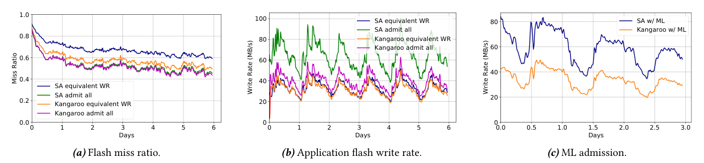
What it shows. Flash miss ratio and application flash write rate over several days from two live test deployments at Facebook (receiving real production request streams but not serving responses), comparing Kangaroo and SA at equal cache size. With probabilistic pre-flash admission at matched write rate (about 33 MB/s), Kangaroo reduces misses by 18%. Comparing each system's best "admit-all" configuration, Kangaroo reduces misses by 3% while writing 38% less than SA. With Facebook's production ML-based admission policy, Kangaroo reduces application write rate by 42.5% at a similar miss ratio to SA.
What to take from it. The direction and rough magnitude of Kangaroo's simulated and lab-measured gains carry over to a real request stream and a real admission policy, though the deployment measures only flash-level (not device-level or backend-level) outcomes and both admission policies were tested on different, non-comparable request windows.
FAQ
Q·What counts as a "tiny object" here, and why does size matter so much?▾
The paper targets objects of roughly 100 to 700 B, such as social-graph edges, tweets, or IoT metadata records. Size matters because flash reads and writes in multi-KB pages: the smaller the object, the more objects must share a page, so both a log index's per-object DRAM cost and a set-associative cache's per-admission write cost get proportionally worse as objects shrink.
Q·What is the difference between device-level and application-level write amplification?▾
Device-level write amplification (dlwa) happens inside the SSD's flash translation layer, which must copy live data out of a block before erasing it; it worsens with higher capacity utilization and more random, small writes. Application-level write amplification (alwa) happens above the device, when the cache itself rewrites more than the new data, for example rewriting a whole 4 KB set to admit one small object. The two multiply, so a cache design that is bad on one axis (like a set-associative cache's alwa) still pays the other (dlwa) on top.
Q·Why not just use an existing key-value store like RocksDB or SILT as the cache?▾
Key-value stores assume deletions are rare and values are kept until explicitly removed. A cache deletes constantly, at its own discretion, every time it evicts. Many key-value stores (including SILT, the closest prior design to Kangaroo) store data in largely immutable layers, so deletes just mark holes that are reclaimed only at the next compaction; Netflix had to over-provision RocksDB-as-cache by 67% to work around this.
Q·How is KLog different from a plain log-structured cache?▾
Operationally it is similar: objects are appended sequentially and tracked by a DRAM index. The difference is KLog's index is partitioned by an object's destination KSet set, so every object that will eventually collide on the same flash page in KSet sits in the same index bucket. That structure is what makes Enumerate-Set, and therefore amortized writes into KSet, cheap; it also shrinks per-object DRAM from 190 bits to 48 bits by letting tags and pointers be much smaller within each partition.
Q·What problem does threshold admission actually solve?▾
Even with KLog batching writes by set, some objects will be alone in their set when flushed; writing them immediately would cost as much alwa as a plain set-associative cache. Threshold admission drops (or recycles) objects until at least n of them collide on the same set, guaranteeing every KSet write is amortized across at least n objects. With n=2 and 100 B objects, this admits 44.4% of objects while cutting the write rate to 22.8% of the unthresholded rate.
Q·If threshold admission drops objects, why doesn't it hurt the miss ratio much?▾
The paper's Markov model shows analytically that, so long as KLog is small relative to KSet, adding threshold (or probabilistic) admission changes the write rate but leaves the steady-state probability of an object being in-cache essentially unchanged. Intuitively, a popular object dropped once will simply be re-requested and re-admitted later; it is write traffic, not hit ratio, that the admission policies are trading away. (In the real deployment, Kangaroo also explicitly re-admits any object that was hit while in KLog, to avoid unnecessary misses on popular objects that miss the threshold.)
Q·What is RRIP, and why doesn't a flash cache just use it directly?▾
RRIP (Re-Reference Interval Prediction) is a multi-bit clock-style eviction policy from processor caches: each object carries a small reuse prediction from near (keep) to far (evict first), promoted to near on a hit and incremented toward far at eviction time, with new objects inserted at a middling value to resist scans. Implementing it directly in a set-associative flash cache is hard because every access would need to update per-object metadata, and KSet has no DRAM index to hold or cheaply update that metadata without extra flash writes.
Q·How does RRIParoo get RRIP's benefit with almost no DRAM?▾
It keeps full RRIP predictions on flash with the set itself, and in DRAM tracks only one bit per object: whether it has been hit since the set was last written. Because RRIP only needs to promote on a hit and increment at eviction, promotions can be deferred until the set is rewritten anyway, at which point the DRAM hit-bits are applied, predictions incremented, and the set refilled from near to far. No extra flash write is needed beyond the write the set would take regardless.
Q·Why does the best cache design change depending on which resource is scarce?▾
Set-associative caches (SA) are mainly limited by write rate, which forces heavy over-provisioning and admission throttling. Log-structured caches (LS) are mainly limited by DRAM, since their index size grows with object count. Kangaroo is explicitly designed to balance both constraints at once, so it wins across most of the budget range the paper tests, but at the extremes (very low write budgets, or very small flash devices) one of the single-constraint designs can briefly edge it out.
Q·Does Kangaroo need more total flash than a plain set-associative cache for the same usable capacity?▾
No, the opposite: because Kangaroo's combined techniques lower write amplification, it needs less over-provisioning than SA. In the main experiment, Kangaroo uses 93% of the flash device for cache capacity versus SA's 81%, giving Kangaroo 15% more usable cache at the same device size and write budget.
Q·What did the Facebook production deployment show that simulation alone could not?▾
It confirmed Kangaroo's gains hold on a live, un-sampled request stream and under Facebook's actual machine-learning admission policy, not just the independent-reference-model assumptions behind the paper's simulator and Markov model. It showed an 18% miss reduction at matched write rate, a 38% write-rate reduction at matched miss ratio in an admit-all configuration, and a 42.5% write-rate reduction under the production ML admission policy.
Q·Is Kangaroo tied to CacheLib specifically?▾
It is implemented as a module inside CacheLib, Facebook's open-source caching engine, and the paper states it was intended to be open-sourced through CacheLib. The design itself (KLog plus KSet, partitioned index, threshold admission, RRIParoo) does not depend on CacheLib internals beyond reusing its existing set-associative small-object cache and admission-policy infrastructure.